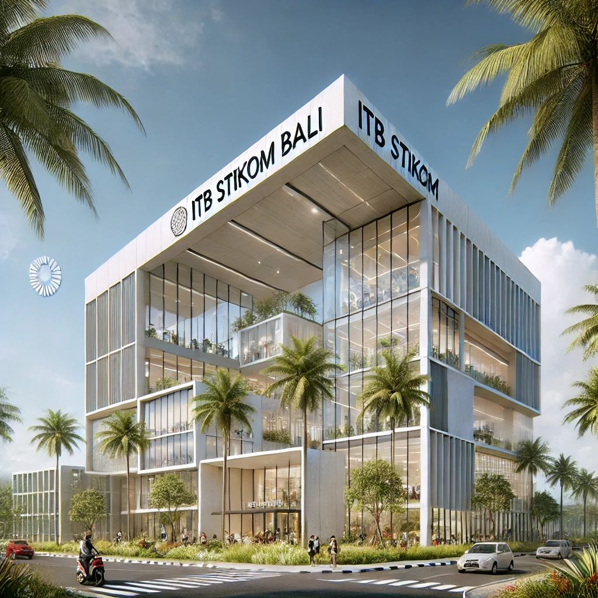

Ni Komang Yogi Suryani
230040184
yogisuriani@gmail.com
Ayo Daftar Sekarang
Pendaftaran Mahasiswa Baru T.A. 2024/2025 dimulai tanggal 10 November 2023
Kuliah di Kampus ICT Terbaik di Bali Nusra yang semua Program Studinya sudah Terakreditasi B-BAN PT dan International ISO 9001:2015.


About
Sejarah Institut Teknologi dan Bisnis STIKOM Bali
-
2000
Awal Mula Berdirinya STIKOM Bali
Berawal dari bertemunya para pemerhati, pencinta, dan praktisi pendidikan seperti Prof. Dr. Made Bandem, MA., Dr. Dadang Hermawan, Drs. Ida Bagus Dharmadiaksa, M.Si., Ak., dan Drs. Satria Dharma pada tahun 2000, yang menaruh perhatian terhadap pesatnya perkembangan teknologi informasi dan komunikasi (TIK), namun belum ada perguruan tinggi TIK yang menawarkan program sarjana di Bali.
-

20 Mei 2001
Pendirian Yayasan Widya Dharma Shanti
Pada tanggal 20 Mei 2001, Yayasan Widya Dharma Shanti didirikan untuk menjadi Badan Penyenggara Perguruan Tinggi Swasta, dan mengajukan izin pendirian Institut Teknologi dan Bisnis (ITB) STIKOM Bali kepada Direktorat Jenderal Pendidikan Tinggi Kementerian Pendidikan Nasional.
-

10 Agustus 2002
Pemberian Izin Pendirian STIKOM Bali
Pada 10 Agustus 2002, izin pendirian ITB STIKOM Bali diberikan dengan nomor 157/D/O/2002, dengan dua program studi: Sistem Komputer (S1) dan Manajemen Informatika (D3).
-

2009
Penambahan Program Studi
Pada tahun 2009, program studi baru yaitu Sistem Informasi (S1) ditambahkan untuk memperkaya pilihan pendidikan di bidang teknologi informasi.
-
2015
Menjadi Perguruan Tinggi Bertaraf Internasional
PPada tahun 2015, ITB STIKOM Bali telah menjadi perguruan tinggi bertaraf internasional dengan lebih dari 6.000 mahasiswa dan hampir 4.000 alumni. STIKOM Bali juga terus melakukan berbagai kerjasama dengan instansi pemerintah, perusahaan swasta, BUMN, BUMD, dan perguruan tinggi baik dalam maupun luar negeri.
-
Be Part
Of Our
Story!
VISI DAN MISI ITB STIKOM BALI

VISI
Visi Institut adalah menjadi perguruan tinggi unggulan dan berkualitas Internasional di bidang ilmu pengetahuan, teknologi dan seni.

Institut Teknologi dan Bisnis (ITB) STIKOM Bali
MISI
Melaksanakan pengelolaan institusi dengan memerhatikan prinsip-prinsip tata pamong dan tata kelola yang baik (transparansi, akuntabilitas, bertanggungjawab, mandiri, dan berkeadilan).

Institut Teknologi dan Bisnis STIKOM Bali
Semua Alamat Kampus Stikom :
Kampus Renon:
Jl. Raya Puputan No. 86 Renon – Denpasar
Telp: (0361) 244445
Kampus Jimbaran:
Jl. Raya Kampus Udayana, Jimbaran Bali
Telp: (0361) 8953537, 081288778840
Kampus Abiansemal:
Jl. Janger Dauh Yeh Cani, Kec. Abiansemal, Kabupaten Badung, Bali
Telp: 0856-3700-803
ITB STIKOM Bali Group
Sekolah Tinggi Teknologi Bandung
Politeknik Nasional Denpasar
Politeknik Ganesha Guru
Bisma Informatika
Lembaga Pendidikan Bali Asia
SMK TI Bali Global
BPRS Fajar Sejahtera
Bergabunglah bersama Kami
Facebook Page ITB STIKOM Bali
Twitter ITB STIKOM Bali
Channel Youtube ITB STIKOM Bali
Instagram ITB STIKOM Bali